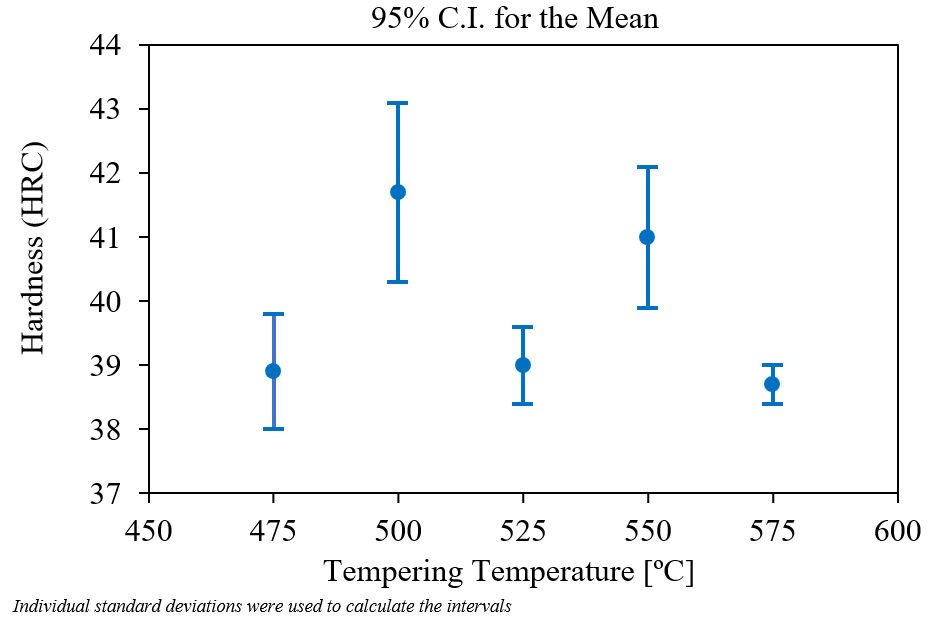
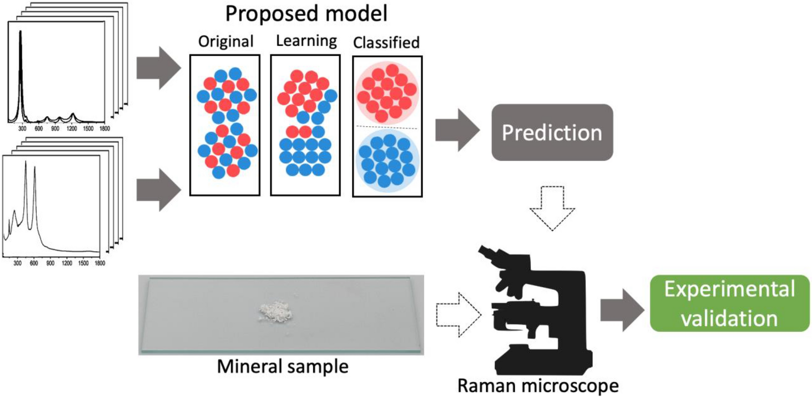
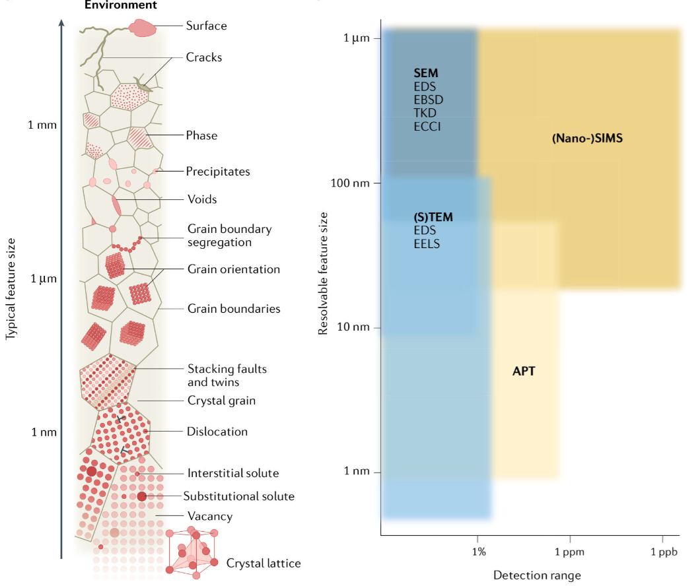
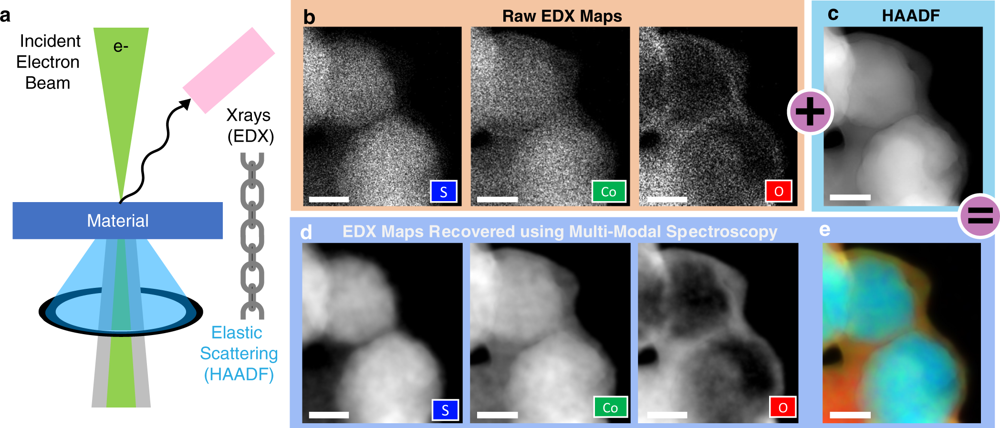
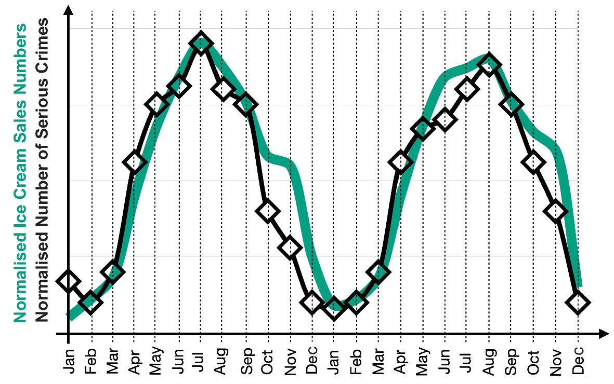
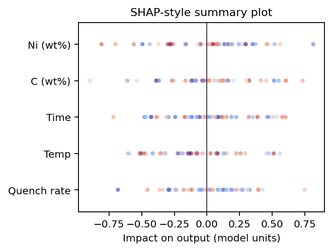
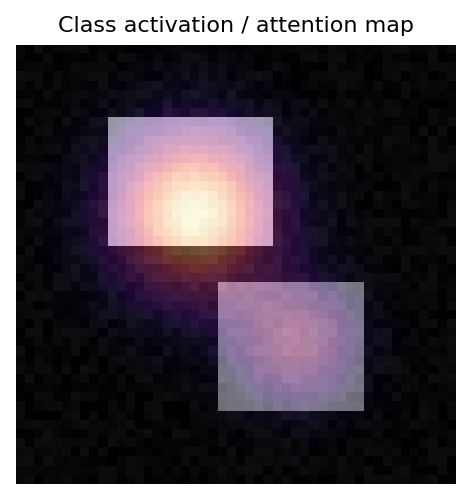

flowchart TD
%% Styling
classDef default fill:#1e293b,stroke:#94a3b8,stroke-width:2px,color:#ffffff,rx:8px,ry:8px;
classDef primary fill:#713f12,stroke:#facc15,stroke-width:2px,color:#ffffff,rx:12px,ry:12px,font-weight:bold;
classDef secondary fill:#064e3b,stroke:#4ade80,stroke-width:2px,color:#ffffff,rx:8px,ry:8px,font-weight:bold;
P["<span style='font-size:24px;'>Processing</span>"]:::secondary -->|<span style='font-size:16px;'>Physics-Informed</span>| S["<span style='font-size:24px;'>Structure</span>"]:::primary
S -->|<span style='font-size:16px;'>Vision ML</span>| Pr["<span style='font-size:24px;'>Property</span>"]:::primary
Pr -->|<span style='font-size:16px;'>Surrogates</span>| Pe["<span style='font-size:24px;'>Performance</span>"]:::primary
Pe -->|<span style='font-size:16px;'>Inverse Design</span>| P
Machine Learning in Materials Processing & Characterization
Unit 1: What Makes Materials Data Special?
Welcome to ML-PC
Unit 1: What Makes Materials Data Special?
Today’s Content:
- From Sumerian clay to Kepler’s laws — the long history of data
- What is Materials Data Science?
- Why materials ML is uniquely hard
- White-Box, Black-Box, and Grey-Box modeling
- The CRISP-DM workflow for the laboratory
Learning Outcomes
By the end of this unit, you can:
- Explain the historical transition from descriptive to data-driven models
- Define Materials Data Science at the intersection of ML, statistics, and domain knowledge
- Identify unique challenges: small data, high cost, noise, multi-modality
- Classify models into White-Box, Grey-Box, and Black-Box categories
- Apply the CRISP-DM process to structure a materials data project
- Differentiate between correlation and causality in materials systems
The “Hype Cycle” vs. Lab Reality
- AI is everywhere in the news — but what about the lab?
- Most materials labs still operate with small datasets and manual analysis
- This course bridges the gap: from “textbook AI” to “lab-ready AI”
Note
The goal is not to replace domain expertise with ML — it is to amplify it.
Historical Roots of Data (I)
The First Data and Metadata
- 3400 BCE: Sumerian cuneiform tablets for counting sheep and grain
- Not just numbers — symbols represented context: units, objects, locations
- The first metadata: data about data Sandfeld, Stefan et al., (2024)

Historical Roots of Data (II)
From Gods to Crystal Spheres
- Ancient astronomy: celestial observations as the first “big data”
- Antikythera Mechanism (~100 BCE): analog computation for celestial prediction
- Models evolved: divine will → geometric spheres → mathematical laws
The key transition: from describing patterns to explaining them with models.

Kepler: The First Data Analyst
- 1609: Kepler inherited 25 years of Mars observations from Tycho Brahe
- He didn’t invent a new telescope — he invented a data-driven explanation
- Transition from descriptive (circles) to explanatory (ellipses)

The lesson: More data alone is not enough. You need the right model.


J. Tobias Mayer: Lunar Tables — An Early Data-Driven Model
What are lunar tables?
- Precomputed numerical tables predicting the Moon’s position over time
- Inputs: date & time
- Outputs: celestial coordinates (longitude, latitude), phase
Why were they important?
- Enabled solving the longitude problem at sea
- Workflow:
- Observe Moon–star position
- Compare with predicted values
- Infer reference time → compute longitude

Connection to Machine Learning
- Lunar tables ≈ surrogate model of a dynamical system
- Conceptual pipeline:
- Data → Model → Prediction → Refinement
- Analogy:
- Input: time
- Output: Moon position
- Model: calibrated function approximator
- Input: time
Materials science today: we often have more measurements than parameters — this is a good problem to have!
The Ashby Map/Material Property Charts: Feature Engineering Before ML
- Michael Ashby (1992): Plotting material properties against each other
- Guided by both the engineering knowledge and intuition chose the most important pairs of properties, e.g., Young’s modulus vs. density or strength vs. density
- Feature engineering without explicit ML

Note
Domain knowledge tells you which features to plot. ML automates finding patterns in high-dimensional versions of this idea.
Recall from MFML: Model Types & Learning Tasks
- Models: Abstractions trading fidelity for simplicity.
- Spectrum: White-Box (physics) \(\leftrightarrow\) Grey-Box (hybrid) \(\leftrightarrow\) Black-Box (data-driven).
- Core Tasks: Supervised (regression/classification) vs Unsupervised (clustering/dimensionality reduction).
- Optimization: We minimize specific loss functions to fit models to data.
Think About This…
Question:
You have a dataset of 50 tensile test curves. You want to predict yield strength from composition.
Should you use a white-box, black-box, or grey-box model?
Discussion → Answer
Grey-box is likely best.
- Black-box limits: High-capacity models risk overfitting (\(n=50\)). Data is too sparse for deep learning without priors.
- White-box limits: Models like Labusch/Fleischer estimate solid-solution strengthening \(\Delta\sigma_{\text{SSS}}(c)\), but cannot predict total yield strength safely since key microstructural state variables (grain size, precipitates) are missing.
Grey-box Strategy
Combine physics + data: \[ \sigma_y(c) = \underbrace{\Delta\sigma_{\text{SSS}}(c; \varepsilon, G)}_{\text{Physics Baseline}} + \underbrace{f_{\text{ML}}(c)}_{\text{Data-driven Residual}} \]
- Physics baseline: Labusch/Fleischer provides a strong prior \(\sigma_{\text{physics}}(c)\)
- ML learns: The unobserved microstructural residuals, missing mechanisms, and noise.
Note
Use physics to reduce the hypothesis space,
and data to correct what physics cannot capture.
Materials example 1: process→property regression
Example: steel quench & temper (DIN 1.7709 / 21CrMoV5-7).
- Inputs: austenitizing temperature/time, quench medium, tempering temperature/time (here: fixed austenitize at 960 °C, oil quench, 2 h temper) Mantzoukas, John et al., (2021), doi:10.1051/matecconf/202134902005.
- Target: hardness (HRC/HV) or tensile properties (continuous).
- Risks: true cooling rate vs nominal quench, furnace load/position, prior microstructure, section size—easy to miss in the spreadsheet but they move the outcome.

Materials example 2: defect classification from images
Example: supervised labeling of SEM micrographs Modarres, Mohammad Hadi et al., (2017), doi:10.1038/s41598-017-13565-z—the same pipeline as defect screening, but here the classes are morphology/device categories rather than “OK vs pore/crack”.
- Inputs: SEM (or EM) images + acquisition metadata (detector, beam energy, working distance, coating, etc.).
- Target: discrete class or defect probability (often multi-class softmax or one-vs-rest heads).
- Risks: class imbalance (rare defect modes), weak/expert-dependent labels, domain shift between tools and operators (contrast/charging/stage drift).

Materials example 3: spectra interpretation task framing
Example: Raman spectra → TiO\(_2\) polymorph class (anatase vs rutile). Bhattacharya, Abhiroop et al., (2022), doi:10.1038/s41598-022-26343-3
- Inputs: spectral signal (possibly multimodal context).
- Targets: composition class, phase indicator, or property proxy.
- Risks: baseline drift, preprocessing leakage, calibration instability.

Parsimony and Occam’s Razor
“Among competing hypotheses, the one with the fewest assumptions should be selected.” McClarren, Ryan G., (2021)
- Recall Overfitting from MFML: A model that memorizes training data but fails on new data
- Parsimony: Prefer the simplest model that explains the data
- Rule of thumb: Start simple, add complexity only when justified
Note
If a linear model works, don’t use a neural network.
The PSPP Paradigm
Processing → Structure → Property → Performance
- Nodes: Distinct data domains (images, spectra, logs)
- Edges: The ML tasks we want to solve
- Dependency: Structure mediates properties
The Multi-Scale Challenge
- Materials span 10 orders of magnitude: atoms (Å) to components (m)
- Each scale has its own data type:
- Atomic: DFT energies, electron microscopy
- Micro: Micrographs, EBSD maps
- Meso: Process logs, mechanical tests
- Macro: Component performance, field data

Note
ML challenge: How do you connect information across scales?
The Multi-Modal Challenge
- A single sample produces many data types:
- Images: SEM, TEM, optical micrographs (2D/3D)
- Spectra: XRD, EELS, EDS (1D/4D)
- Time series: Temperature logs, force curves
- Scalars: Hardness, conductivity, composition
Fusion problem: How do you combine a micrograph with a spectrum with a process log into one model?
Model-driven fusion in STEM: joint recovery of elemental maps by linking high-SNR elastic (HAADF) structure with spectroscopic (EDX/EELS) signals—often at much lower dose than chemistry-only mapping Schwartz, Jonathan et al., (2022), doi:10.1038/s41524-021-00692-5.

Small Data / High Cost
- A single microscopy session can cost hundreds to a few thousand Euros in access charges alone—before counting preparation, travel to a national facility, and expert time.
- Synthesizing a new alloy (or composition) takes days to weeks of lab and person time; each new label in the dataset is tied to that pipeline.
- Typical ML dataset sizes in our field: 10–1000 conditions or specimens—not millions of i.i.d. draws.
Typical access charges (EU core facilities):
- SEM / entry TEM class tools: often tens of € per hour.
- Analytical S/TEM (EELS/EDX, HRSTEM, tomography setups): commonly roughly 50–150 €/h on published university tariffs (operator-assisted, external, or industrial use is often several times higher).
- Back-of-envelope: ~8–12 h instrument time for a careful study × ~100 €/h → on the order of €10³ before prep and analysis—so “thousands of Euros”
Contrast: ImageNet has 14 million images collected at ~zero marginal cost per extra jpeg. A materials dataset with 50–500 labeled examples can already reflect many person-months and many instrument-days.
Note
Materials data is precious and sparse
Measurement Noise and Artifacts in the Lab
- Beyond theoretical noise: Real laboratory data contains more than just statistical uncertainty.
- Systematic Errors: Instruments drift over time, calibration degrades.
- Physical Artifacts: Sample charging in SEM, sample contamination, beam damage.
These artifacts create epistemic uncertainty that must be managed through strict experimental protocols, not just more data.
The Curse of Dimensionality (I)
Thought experiment: You have 3 process parameters, each with 10 possible values.
- Full grid search: \(10^3 = 1{,}000\) experiments
- But if you have 10 parameters: \(10^{10} = 10{,}000{,}000{,}000\) experiments!
Even with 35 experiments, you’ve explored only \(\frac{35}{10^3} = 3.5\%\) of a 3-parameter space.
The Curse of Dimensionality (II)
- In high-dimensional space, data is sparse by default
- All points are approximately equidistant from each other
- Nearest-neighbor methods break down
- Materials data lies on a low-dimensional manifold — finding it is key

Data Scales (I): Nominal and Ordinal
- Nominal (names): Phase labels (FCC, BCC, HCP)
- No ordering, no arithmetic
- Ordinal (ordered names): Grain size categories (fine, medium, coarse)
- Ordering exists, but distances are undefined
ML impact: You cannot compute a meaningful “average” of nominal data. Choose your algorithms accordingly.
Data Scales (II): Interval and Ratio
- Interval (equal distances, no true zero): Temperature in Celsius
- 20°C is not “twice as hot” as 10°C
- Ratio (true zero): Temperature in Kelvin, mass, length
- 200 K is genuinely twice as hot as 100 K
The Sumerian connection: A number without its unit and scale is worthless — this was true in 3400 BCE and it’s true today Sandfeld, Stefan et al., (2024).
Metadata in the Lab
- Every measurement needs metadata:
- Instrument settings (voltage, magnification, exposure)
- Calibration history
- Environmental conditions (temperature, humidity)
- Sample preparation steps
Without metadata, your data is just noise with a timestamp.
Think About This: The “Failure Story”
True story: A neural network was trained to classify steel microstructures. It achieved 99% accuracy on the test set.
But it was actually learning the serial number of the microscope — each microscope was used for only one type of steel.
This is a classic example of data leakage (introduced in MFML): the model finds a shortcut that correlates with the label but has no physical meaning.
Note
Always ask: “What is the model actually learning?”
Recap
- PSPP structures the data flow in materials science
- Materials data is multi-scale, multi-modal, and sparse
- The Curse of Dimensionality means we can never sample enough
- Data scales and metadata constrain what operations are valid
- Data leakage is the silent killer — always check what the model learned
The CRISP-DM Standard
Cross-Industry Standard Process for Data Mining
- Originally developed for business analytics (1996)
- Adapted here for scientific laboratory workflows
- 6 phases forming a cycle
flowchart TD
%% Styling
classDef default fill:#1e293b,stroke:#94a3b8,stroke-width:2px,color:#ffffff,rx:8px,ry:8px;
classDef step fill:#082f49,stroke:#38bdf8,stroke-width:2px,color:#ffffff,rx:8px,ry:8px,font-weight:600;
BU["<span style='font-size:18px;'>1. Business<br>Understanding</span>"]:::step --> DU["<span style='font-size:18px;'>2. Data<br>Understanding</span>"]:::step
DU --> DP["<span style='font-size:18px;'>3. Data<br>Preparation</span>"]:::step
DP --> M["<span style='font-size:18px;'>4. Modeling</span>"]:::step
M --> E["<span style='font-size:18px;'>5. Evaluation</span>"]:::step
E --> D["<span style='font-size:18px;'>6. Deployment</span>"]:::step
D --> Mon["<span style='font-size:18px;'>7. Monitoring</span>"]:::step
Mon -->|<span style='font-size:16px;'>Feedback Loop</span>| BU
Phase 1: Business (Scientific) Understanding
- What is the scientific/business question?
- What would a useful answer look like?
- What is the actual Return on Investment (ROI) or cost savings?
Alloy Example: Can we predict yield strength from composition to reduce expensive destructive tensile testing by 50%? The ROI is the testing money/time saved vs. the cost of training the ML model.
Bad: “Let’s apply ML to our data and see what happens.”
Phase 2: Data Understanding
- Visualize raw data before anything else!
- Check for completeness and boundary conditions:
- Missing values and outliers (saturation)
- Measurement units (are they recorded?)
Alloy Example: We gather legacy CSVs of tensile tests and note that half are missing grain size data. We also notice 10% of samples were measured in ‘ksi’ instead of ‘MPa’!
Rule: If you can’t describe exactly what your raw data looks like, you’re not ready to model.
Phase 3: Data Preparation
- Cleaning: Imputing or dropping missing values
- Scaling/Transformation: Normalizing features to comparable ranges
- Splitting: Train / Validation / Test sets
Alloy Example: We convert all ‘ksi’ to ‘MPa’, drop columns with >50% missing data, and carefully split our data by casting batch, not randomly, to prevent data leakage.
Data preparation frequently takes 60-80% of the entire project timeline.
Phase 4: Modeling
- Select algorithm(s) appropriate for your:
- Data structure (tabular vs images)
- Data volume (\(n=50\) vs \(n=1,000,000\))
- Crucial: Start with a simple baseline!
Alloy Example: We first train a simple Multivariate Linear Regression before trying a complex Random Forest or Neural Network.
A simple baseline model that you understand is worth more than a complex model that you don’t.
Phase 5: Evaluation
- Does the model generalize to new data?
- Does it meet the KPIs set in Phase 1?
- Evaluate metrics (e.g., \(R^2\), RMSE, MAE)
Alloy Example: The Random Forest gets an \(R^2=0.92\), predicting yield strength within \(\pm10\) MPa. This accuracy is sufficient to safely skip physical testing for standard batches, meeting our Phase 1 goal!
Phase 6 & 7: Deployment & Monitoring
- Phase 6 (Deployment): Integrating the model into the lab or factory workflow.
- Phase 7 (Monitoring): Checking if KPIs hold up over time and triggering retraining.
Alloy Example:
- Deployment: The model is built into an operator dashboard. Technicians type in the chemistry, and it outputs the expected yield strength predictions.
- Monitoring: After 6 months, a furnace is replaced. The model starts constantly underpredicting strength. We catch this drift and trigger a model retraining loop back to Phase 1.
Correlation vs. Causality (I)
The “Ice Cream” Trap


- Observation: Ice cream sales and crime rates both increase in summer
- Spurious correlation: Ice cream does not cause crime
- Confounding variable: Heat (temperature) drives both
Correlation vs. Causality (II) - In Materials Science
- Does adding chromium cause increased hardness?
- Or is chromium a proxy for a specific heat treatment that refines grain size?
- The PSPP graph helps: trace the causal chain through Processing → Structure → Property
Randomized experiments (varying one factor at a time) are the gold standard for establishing causality — but expensive in materials science.
Scientific Trust and Explainability
- Peers will ask: “Why does your model make this prediction?”
- A black-box answer (“the neural network said so”) is not acceptable
- Explainability methods: SHAP values, attention maps, feature importance
SHAP (local attributions) — how much each feature pushes this prediction up or down.

Attention / activation maps — where the network looks in an input (image, sequence, spectrum grid).

Feature importance — global ranking of inputs (tree splits, permutation Δ, coefficients).

Recap
- CRISP-DM provides a structured workflow for materials ML projects
- Start with a clear scientific question (Phase 1)
- Explore your data before modeling (Phase 2)
- Baseline before complexity (Phase 4)
- Generalization is the real test — not training accuracy (Phase 5)
- Always distinguish correlation from causality
Exercise Preview: MDS-1 Tensile Test Dataset
- Real dataset: tensile tests on steel samples
- Features: composition, processing parameters
- Target: yield strength, ultimate tensile strength
- Your task: Build a baseline regressor and evaluate it honestly
Exercise Tasks
- Data Understanding: Inspect the dataset — what scales? what distributions?
- Identify data types: Nominal, Ordinal, Interval, Ratio
- Build a baseline: Simple linear regression
- Evaluate honestly: R², residual plots, cross-validation
- Check for leakage: Are there hidden correlations?
Checklist for Trustworthy Materials ML
Unit 1 Summary: Top Takeaways
- Materials data is precious and sparse — every sample counts
- Domain knowledge is a prerequisite for Materials Data Science
- PSPP structures the data flow from processing to performance
- Choose the right model type: White → Grey → Black
- CRISP-DM provides a rigorous path from raw data to insight
- Always check: correlation ≠ causation
References & Reading Assignments
Required Reading:
- Sandfeld (2024): Chapters 1, 2, 4 Sandfeld, Stefan et al., (2024)
- Neuer (2024): Chapter 1 Neuer, Michael et al., (2024)
- McClarren (2021): Chapter 1 McClarren, Ryan G., (2021)
Next Week: Unit 2 — Physics of Data Formation
How do physical measurements become digital arrays? Understanding the measurement chain, noise, and dimensionality reduction.
References
Materials data science, Stefan Sandfeld & others
Hardness behavior of W. Nr. 1.7709 steel, oil quenched and tempered between 475–575 c, MATEC Web of Conferences, John Mantzoukas, Dimitris G. Papageorgiou, Carmen Medrea, & Constantinos Stergiou https://doi.org/10.1051/matecconf/202134902005
Neural network for nanoscience scanning electron microscope image recognition, Scientific Reports, Mohammad Hadi Modarres, Rossella Aversa, Stefano Cozzini, Regina Ciancio, Angelo Leto, & Giuseppe Piero Brandino https://doi.org/10.1038/s41598-017-13565-z
Deep-learning framework for fully-automated recognition of TiO2 polymorphs based on raman spectroscopy, Scientific Reports, Abhiroop Bhattacharya, Jaime A. Benavides, Luis Felipe Gerlein, & Sylvain G. Cloutier https://doi.org/10.1038/s41598-022-26343-3
Machine learning for engineers: Using data to solve problems for physical systems, Ryan G. McClarren
Imaging atomic-scale chemistry from fused multi-modal electron microscopy, npj Computational Materials, Jonathan Schwartz, Zichao Wendy Di, Yi Jiang, Alyssa J. Fielitz, Don-Hyung Ha, Sanjaya D. Perera, Ismail El Baggari, Richard D. Robinson, Jeffrey A. Fessler, Colin Ophus, Steve Rozeveld, & Robert Hovden https://doi.org/10.1038/s41524-021-00692-5
Machine learning for engineers: Introduction to physics-informed, explainable learning methods for AI in engineering applications, Michael Neuer & others
Machine learning for engineers: Using data to solve problems for physical systems, Ryan G. McClarren